1 Multivariate Linear Models
McElreath’s listed reasons for multivaraiable regression include:
- statistical control for confounds
- multiple causation
- interactions
We’ll approach the first two in this chapter. Interactions are reserved for chapter 6.
1.1 Spurious associations
Load the Waffle House data.
library(rethinking)
data(WaffleDivorce)
d <- WaffleDivorceUnload rethinking and load brms and, while we’re at it, the tidyverse.
rm(WaffleDivorce)
detach(package:rethinking, unload = T)
library(brms)
library(tidyverse)I’m not going to show the output, but you might go ahead and investigate the data with the typical functions. E.g.,
head(d)
glimpse(d)Now we have our data, we can reproduce Figure 5.1. One convenient way to get the handful of sate labels into the plot was with the geom_text_repel() function from the ggrepel package. But first, we spent the last few chapters warming up with ggplot2. Going forward, each chapter will have its own plot theme. In this chapter, we’ll characterize the plots with theme_bw() + theme(panel.grid = element_rect()) and coloring based off of "firebrick".
# install.packages("ggrepel", depencencies = T)
library(ggrepel)
d %>%
ggplot(aes(x = WaffleHouses/Population, y = Divorce)) +
stat_smooth(method = "lm", fullrange = T, size = 1/2,
color = "firebrick4", fill = "firebrick", alpha = 1/5) +
geom_point(size = 1.5, color = "firebrick4", alpha = 1/2) +
geom_text_repel(data = d %>% filter(Loc %in% c("ME", "OK", "AR", "AL", "GA", "SC", "NJ")),
aes(label = Loc),
size = 3, seed = 1042) + # this makes it reproducible
scale_x_continuous(limits = c(0, 55)) +
coord_cartesian(xlim = 0:50, ylim = 5:15) +
labs(x = "Waffle Houses per million",
y = "Divorce rate") +
theme_bw() +
theme(panel.grid = element_blank()) 
With coord_map() and help from the fiftystater package (which gives us access to lat/long data for all fifty states via fifty_states), we can plot our three major variables in a map format.
library(fiftystater)
d %>%
# first we'll standardize the three variables to put them all on the same scale
mutate(Divorce_z = (Divorce - mean(Divorce)) / sd(Divorce),
MedianAgeMarriage_z = (MedianAgeMarriage - mean(MedianAgeMarriage)) / sd(MedianAgeMarriage),
Marriage_z = (Marriage - mean(Marriage)) / sd(Marriage),
# need to make the state names lowercase to match with the map data
Location = str_to_lower(Location)) %>%
# here we select the relevant variables and put them in the long format to facet with `facet_wrap()`
select(Divorce_z:Marriage_z, Location) %>%
gather(key, value, -Location) %>%
ggplot(aes(map_id = Location)) +
geom_map(aes(fill = value), map = fifty_states,
color = "firebrick", size = 1/15) +
expand_limits(x = fifty_states$long, y = fifty_states$lat) +
scale_x_continuous(NULL, breaks = NULL) +
scale_y_continuous(NULL, breaks = NULL) +
scale_fill_gradient(low = "#f8eaea", high = "firebrick4") +
coord_map() +
theme_bw() +
theme(panel.grid = element_blank(),
legend.position = "none",
strip.background = element_rect(fill = "transparent", color = "transparent")) +
facet_wrap(~key)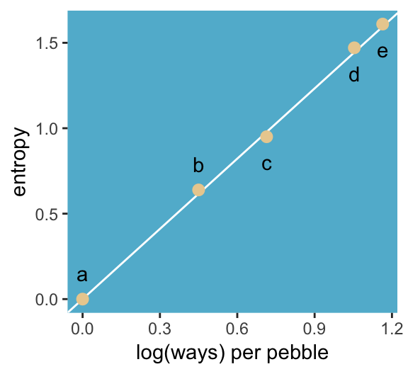
One of the advantages of this visualization method is it just became clear that Nevada is missing from the WaffleDivorce data. Execute d %>% distinct(Location) to see for yourself. Those missing data should motivate the skills we’ll cover in chapter 14. But let’s get back on track.
Here we’ll officially standardize the predictor, MedianAgeMarriage.
d <-
d %>%
mutate(MedianAgeMarriage_s = (MedianAgeMarriage - mean(MedianAgeMarriage)) /
sd(MedianAgeMarriage))Now we’re ready to fit the first univariable model.
b5.1 <-
brm(data = d, family = gaussian,
Divorce ~ 1 + MedianAgeMarriage_s,
prior = c(prior(normal(10, 10), class = Intercept),
prior(normal(0, 1), class = b),
prior(uniform(0, 10), class = sigma)),
iter = 2000, warmup = 500, chains = 4, cores = 4)The summary:
print(b5.1)## Family: gaussian
## Links: mu = identity; sigma = identity
## Formula: Divorce ~ 1 + MedianAgeMarriage_s
## Data: d (Number of observations: 50)
## Samples: 4 chains, each with iter = 2000; warmup = 500; thin = 1;
## total post-warmup samples = 6000
##
## Population-Level Effects:
## Estimate Est.Error l-95% CI u-95% CI Eff.Sample Rhat
## Intercept 9.69 0.22 9.26 10.10 5231 1.00
## MedianAgeMarriage_s -1.04 0.21 -1.46 -0.63 6000 1.00
##
## Family Specific Parameters:
## Estimate Est.Error l-95% CI u-95% CI Eff.Sample Rhat
## sigma 1.51 0.16 1.24 1.87 6000 1.00
##
## Samples were drawn using sampling(NUTS). For each parameter, Eff.Sample
## is a crude measure of effective sample size, and Rhat is the potential
## scale reduction factor on split chains (at convergence, Rhat = 1).We’ll employ fitted() to make Figure 5.2.b. In preparation for fitted() we’ll make a new tibble, nd, composed of a handful of densely-packed values for our predictor, MedianAgeMarriage_s. With the newdata argument, we’ll use those values to return model-implied expected values for Divorce.
# First we determine the range of `MedianAgeMarriage_s` values we'd like to feed into `fitted()`
nd <- tibble(MedianAgeMarriage_s = seq(from = -3, to = 3.5,
length.out = 30))
# Now we use `fitted()` to get the model-implied trajectories
fitd_b5.1 <-
fitted(b5.1, newdata = nd) %>%
as_tibble() %>%
bind_cols(nd)
# The plot
ggplot(data = fitd_b5.1,
aes(x = MedianAgeMarriage_s, y = Estimate)) +
geom_ribbon(aes(ymin = Q2.5, ymax = Q97.5),
fill = "firebrick", alpha = 1/5) +
geom_line(color = "firebrick4") +
geom_point(data = d,
aes(x = MedianAgeMarriage_s, y = Divorce),
size = 2, color = "firebrick4") +
labs(y = "Divorce") +
coord_cartesian(xlim = range(d$MedianAgeMarriage_s),
ylim = range(d$Divorce)) +
theme_bw() +
theme(panel.grid = element_blank()) 
Before fitting the next model, we’ll standardize Marriage.
d <-
d %>%
mutate(Marriage_s = (Marriage - mean(Marriage)) / sd(Marriage))We’re ready to fit our second univariable model.
b5.2 <-
brm(data = d, family = gaussian,
Divorce ~ 1 + Marriage_s,
prior = c(prior(normal(10, 10), class = Intercept),
prior(normal(0, 1), class = b),
prior(uniform(0, 10), class = sigma)),
iter = 2000, warmup = 500, chains = 4, cores = 4)print(b5.2)## Family: gaussian
## Links: mu = identity; sigma = identity
## Formula: Divorce ~ 1 + Marriage_s
## Data: d (Number of observations: 50)
## Samples: 4 chains, each with iter = 2000; warmup = 500; thin = 1;
## total post-warmup samples = 6000
##
## Population-Level Effects:
## Estimate Est.Error l-95% CI u-95% CI Eff.Sample Rhat
## Intercept 9.69 0.25 9.20 10.18 4952 1.00
## Marriage_s 0.64 0.25 0.15 1.12 5182 1.00
##
## Family Specific Parameters:
## Estimate Est.Error l-95% CI u-95% CI Eff.Sample Rhat
## sigma 1.75 0.19 1.43 2.17 5209 1.00
##
## Samples were drawn using sampling(NUTS). For each parameter, Eff.Sample
## is a crude measure of effective sample size, and Rhat is the potential
## scale reduction factor on split chains (at convergence, Rhat = 1).Now we’ll wangle and plot our version of Figure 5.2.a.
nd <- tibble(Marriage_s = seq(from = -2.5, to = 3.5,
length.out = 30))
fitd_b5.2 <-
fitted(b5.2, newdata = nd) %>%
as_tibble() %>%
bind_cols(nd)
ggplot(data = fitd_b5.2,
aes(x = Marriage_s, y = Estimate)) +
geom_ribbon(aes(ymin = Q2.5, ymax = Q97.5),
fill = "firebrick", alpha = 1/5) +
geom_line(color = "firebrick4") +
geom_point(data = d,
aes(x = Marriage_s, y = Divorce),
size = 2, color = "firebrick4") +
coord_cartesian(xlim = range(d$Marriage_s),
ylim = range(d$Divorce)) +
labs(y = "Divorce") +
theme_bw() +
theme(panel.grid = element_blank()) 
1.1.1 Multivariate notation.
Now we’ll get both predictors in there with our very first multivariable model. We can write the statistical model as
\[ \begin{eqnarray} \text{Divorce}_i & \sim & \text{Normal}(\mu_i, \sigma) \\ \mu_i & = & \alpha + \beta_1 \text{Marriage_s}_i + \beta_2 \text{MedianAgeMarriage_s}_i \\ \alpha & \sim & \text{Normal}(10, 10) \\ \beta_1 & \sim & \text{Normal}(0, 1) \\ \beta_2 & \sim & \text{Normal}(0, 1) \\ \sigma & \sim & \text{Uniform}(0, 10) \end{eqnarray} \]
1.1.2 Fitting the model.
Much like we used the + operator to add single predictors to the intercept, we just use more + operators in the formula to add more predictors. Also notice we’re using the same prior prior(normal(0, 1), class = b) for both predictors. Within the brms framework, they are both of class = b. But if we wanted their priors to differ, we’d make two prior() statements and differentiate them with the coef argument. You’ll see that later on.
b5.3 <-
brm(data = d, family = gaussian,
Divorce ~ 1 + Marriage_s + MedianAgeMarriage_s,
prior = c(prior(normal(10, 10), class = Intercept),
prior(normal(0, 1), class = b),
prior(uniform(0, 10), class = sigma)),
iter = 2000, warmup = 500, chains = 4, cores = 4)print(b5.3)## Family: gaussian
## Links: mu = identity; sigma = identity
## Formula: Divorce ~ 1 + Marriage_s + MedianAgeMarriage_s
## Data: d (Number of observations: 50)
## Samples: 4 chains, each with iter = 2000; warmup = 500; thin = 1;
## total post-warmup samples = 6000
##
## Population-Level Effects:
## Estimate Est.Error l-95% CI u-95% CI Eff.Sample Rhat
## Intercept 9.69 0.21 9.27 10.12 5123 1.00
## Marriage_s -0.13 0.29 -0.70 0.45 3494 1.00
## MedianAgeMarriage_s -1.13 0.29 -1.69 -0.55 3961 1.00
##
## Family Specific Parameters:
## Estimate Est.Error l-95% CI u-95% CI Eff.Sample Rhat
## sigma 1.52 0.16 1.24 1.87 5271 1.00
##
## Samples were drawn using sampling(NUTS). For each parameter, Eff.Sample
## is a crude measure of effective sample size, and Rhat is the potential
## scale reduction factor on split chains (at convergence, Rhat = 1).The stanplot() function is an easy way to get a default coefficient plot. You just put the brmsfit object into the function.
stanplot(b5.3)
There are numerous ways to make a coefficient plot. Another is with the mcmc_intervals() function from the bayesplot package. A nice feature of the bayesplot package is its convenient way to alter the color scheme with the color_scheme_set() function. Here, for example, we’ll make the theme red. But note how the mcmc_intervals() function requires you to work with the posterior_samples() instead of the brmsfit object.
# install.packages("bayesplot", dependencies = T)
library(bayesplot)
post <- posterior_samples(b5.3)
color_scheme_set("red")
mcmc_intervals(post[, 1:4],
prob = .5,
point_est = "median") +
labs(title = "My fancy bayesplot-based coefficient plot") +
theme(axis.text.y = element_text(hjust = 0),
axis.line.x = element_line(size = 1/4),
axis.line.y = element_blank(),
axis.ticks.y = element_blank())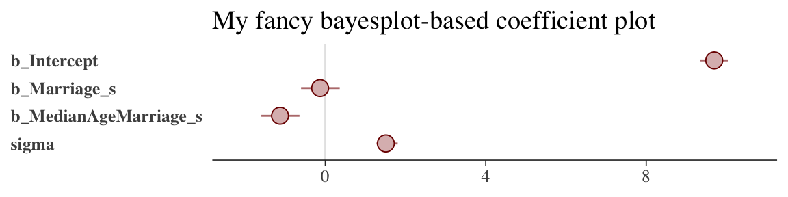
Because bayesplot produces a ggplot2 object, the plot was adjustable with familiar ggplot2 syntax. For more ideas, check out this vignette.
The tidybaes::stat_pointintervalh() function offers a third way, this time with a more ground-up ggplot2 workflow.
library(tidybayes)
post %>%
select(-lp__) %>%
gather() %>%
ggplot(aes(x = value, y = reorder(key, value))) + # note how we used `reorder()` to arrange the coefficients
geom_vline(xintercept = 0, color = "firebrick4", alpha = 1/10) +
stat_pointintervalh(point_interval = mode_hdi, .width = .95,
size = 3/4, color = "firebrick4") +
labs(title = "My tidybayes-based coefficient plot",
x = NULL, y = NULL) +
theme_bw() +
theme(panel.grid = element_blank(),
panel.grid.major.y = element_line(color = alpha("firebrick4", 1/4), linetype = 3),
axis.text.y = element_text(hjust = 0),
axis.ticks.y = element_blank())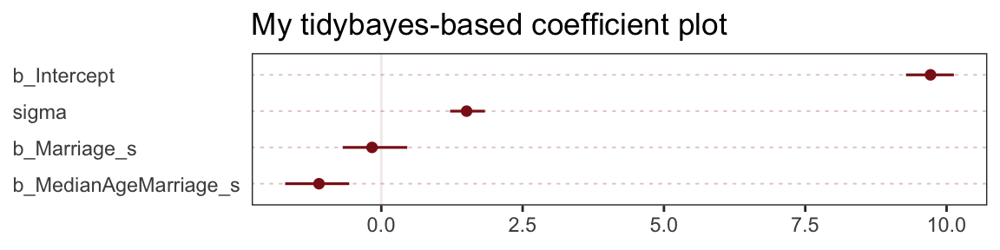
The substantive interpretation of all those coefficient plots is: “Once we know median age at marriage for a State, there is little or no additive predictive power in also knowing the rate of marriage in that State” (p. 126, emphasis in the original).
1.1.3 Plotting multivariate posteriors.
McElreath’s prose is delightfully deflationary. “There is a huge literature detailing a variety of plotting techniques that all attempt to help one understand multiple linear regression. None of these techniques is suitable for all jobs, and most do not generalize beyond linear regression” (p. 126). Now you’re inspired, let’s learn three:
- Predictor residual plots
- Counterfactual plots
- Posterior prediction plots
1.1.3.1 Predictor residual plots.
To get ready to make our residual plots, we’ll predict Marriage_s with MedianAgeMarriage_s.
b5.4 <-
brm(data = d, family = gaussian,
Marriage_s ~ 1 + MedianAgeMarriage_s,
prior = c(set_prior("normal(0, 10)", class = "Intercept"),
set_prior("normal(0, 1)", class = "b"),
set_prior("uniform(0, 10)", class = "sigma")),
iter = 2000, warmup = 500, chains = 4, cores = 4)print(b5.4)## Family: gaussian
## Links: mu = identity; sigma = identity
## Formula: Marriage_s ~ 1 + MedianAgeMarriage_s
## Data: d (Number of observations: 50)
## Samples: 4 chains, each with iter = 2000; warmup = 500; thin = 1;
## total post-warmup samples = 6000
##
## Population-Level Effects:
## Estimate Est.Error l-95% CI u-95% CI Eff.Sample Rhat
## Intercept -0.00 0.10 -0.21 0.20 4895 1.00
## MedianAgeMarriage_s -0.71 0.10 -0.91 -0.51 4803 1.00
##
## Family Specific Parameters:
## Estimate Est.Error l-95% CI u-95% CI Eff.Sample Rhat
## sigma 0.72 0.08 0.59 0.88 4476 1.00
##
## Samples were drawn using sampling(NUTS). For each parameter, Eff.Sample
## is a crude measure of effective sample size, and Rhat is the potential
## scale reduction factor on split chains (at convergence, Rhat = 1).With fitted(), we compute the expected values for each State (with the exception of Nevada). Since the MedianAgeMarriage_s values for each state are in the date we used to fit the model, we’ll omit the newdata argument.
fitd_b5.4 <-
fitted(b5.4) %>%
as_tibble() %>%
bind_cols(d)
head(fitd_b5.4)## # A tibble: 6 x 19
## Estimate Est.Error Q2.5 Q97.5 Location Loc Population
## <dbl> <dbl> <dbl> <dbl> <fct> <fct> <dbl>
## 1 0.430 0.123 0.185 0.675 Alabama AL 4.78
## 2 0.488 0.128 0.234 0.741 Alaska AK 0.71
## 3 0.144 0.107 -0.0688 0.356 Arizona AZ 6.33
## 4 1.00 0.181 0.635 1.35 Arkansas AR 2.92
## 5 -0.429 0.120 -0.667 -0.197 California CA 37.2
## 6 0.201 0.110 -0.0144 0.419 Colorado CO 5.03
## # ... with 12 more variables: MedianAgeMarriage <dbl>, Marriage <dbl>,
## # Marriage.SE <dbl>, Divorce <dbl>, Divorce.SE <dbl>,
## # WaffleHouses <int>, South <int>, Slaves1860 <int>,
## # Population1860 <int>, PropSlaves1860 <dbl>, MedianAgeMarriage_s <dbl>,
## # Marriage_s <dbl>After a little data processing, we can make Figure 5.3.
fitd_b5.4 %>%
ggplot(aes(x = MedianAgeMarriage_s, y = Marriage_s)) +
geom_point(size = 2, shape = 1, color = "firebrick4") +
geom_segment(aes(xend = MedianAgeMarriage_s, yend = Estimate),
size = 1/4) +
geom_line(aes(y = Estimate),
color = "firebrick4") +
coord_cartesian(ylim = range(d$Marriage_s)) +
theme_bw() +
theme(panel.grid = element_blank()) 
We get the residuals with the well-named residuals() function. Much like with brms::fitted(), brms::residuals() returns a four-vector matrix with the number of rows equal to the number of observations in the original data (by default, anyway). The vectors have the familiar names: Estimate, Est.Error, Q2.5, and Q97.5. See the brms reference manual for details.
With our residuals in hand, we just need a little more data processing to make Figure 5.4.a.
res_b5.4 <-
residuals(b5.4) %>%
# To use this in ggplot2, we need to make it a tibble or data frame
as_tibble() %>%
bind_cols(d)
# for the annotation at the top
text <-
tibble(Estimate = c(- 0.5, 0.5),
Divorce = 14.1,
label = c("slower", "faster"))
res_b5.4 %>%
ggplot(aes(x = Estimate, y = Divorce)) +
stat_smooth(method = "lm", fullrange = T,
color = "firebrick4", fill = "firebrick4",
alpha = 1/5, size = 1/2) +
geom_vline(xintercept = 0, linetype = 2, color = "grey50") +
geom_point(size = 2, color = "firebrick4", alpha = 2/3) +
geom_text(data = text,
aes(label = label)) +
scale_x_continuous(limits = c(-2, 2)) +
coord_cartesian(xlim = range(res_b5.4$Estimate),
ylim = c(6, 14.1)) +
labs(x = "Marriage rate residuals") +
theme_bw() +
theme(panel.grid = element_blank())
To get the MedianAgeMarriage_s residuals, we have to fit the corresponding model first.
b5.4b <-
brm(data = d, family = gaussian,
MedianAgeMarriage_s ~ 1 + Marriage_s,
prior = c(prior(normal(0, 10), class = Intercept),
prior(normal(0, 1), class = b),
prior(uniform(0, 10), class = sigma)),
iter = 2000, warmup = 500, chains = 4, cores = 4)And now we’ll get the new batch of residuals, do a little data processing, and make a plot corresponding to Figure 5.4.b.
text <-
tibble(Estimate = c(- 0.7, 0.5),
Divorce = 14.1,
label = c("younger", "older"))
residuals(b5.4b) %>%
as_tibble() %>%
bind_cols(d) %>%
ggplot(aes(x = Estimate, y = Divorce)) +
stat_smooth(method = "lm", fullrange = T,
color = "firebrick4", fill = "firebrick4",
alpha = 1/5, size = 1/2) +
geom_vline(xintercept = 0, linetype = 2, color = "grey50") +
geom_point(size = 2, color = "firebrick4", alpha = 2/3) +
geom_text(data = text,
aes(label = label)) +
scale_x_continuous(limits = c(-2, 3)) +
coord_cartesian(xlim = range(res_b5.4$Estimate),
ylim = c(6, 14.1)) +
labs(x = "Age of marriage residuals") +
theme_bw() +
theme(panel.grid = element_blank()) 
1.1.3.2 Counterfactual plots.
A second sort of inferential plot displays the implied predictions of the model. I call these plots counterfactual, because they can be produced for any values of the predictor variable you like, even unobserved or impossible combinations like very high median age of marriage and very high marriage rate. There are no States with this combination, but in a counterfactual plot, you can ask the model for a prediction for such a State. (p. 129, emphasis in the original)
Making Figure 5.5.a requires a little more data wrangling than before.
# We need new data
nd <-
tibble(Marriage_s = seq(from = -3, to = 3, length.out = 30),
MedianAgeMarriage_s = rep(mean(d$MedianAgeMarriage_s), times = 30))
fitted(b5.3, newdata = nd) %>%
as_tibble() %>%
# Since `fitted()` and `predict()` name their intervals the same way, we'll need to `rename()` then to keep them straight.
rename(f_ll = Q2.5,
f_ul = Q97.5) %>%
# Note how we're just nesting the `predict()` code right inside `bind_cols()`
bind_cols(
predict(b5.3, newdata = nd) %>%
as_tibble() %>%
# Since we only need the intervals, we'll use `transmute()` rather than `mutate()`
transmute(p_ll = Q2.5,
p_ul = Q97.5)
) %>%
bind_cols(nd) %>%
# We're finally ready to plot
ggplot(aes(x = Marriage_s, y = Estimate)) +
geom_ribbon(aes(ymin = p_ll, ymax = p_ul),
fill = "firebrick", alpha = 1/5) +
geom_ribbon(aes(ymin = f_ll, ymax = f_ul),
fill = "firebrick", alpha = 1/5) +
geom_line(color = "firebrick4") +
coord_cartesian(xlim = range(d$Marriage_s),
ylim = c(6, 14)) +
labs(subtitle = "Counterfactual plot for which\nMedianAgeMarriage_s = 0",
y = "Divorce") +
theme_bw() +
theme(panel.grid = element_blank()) 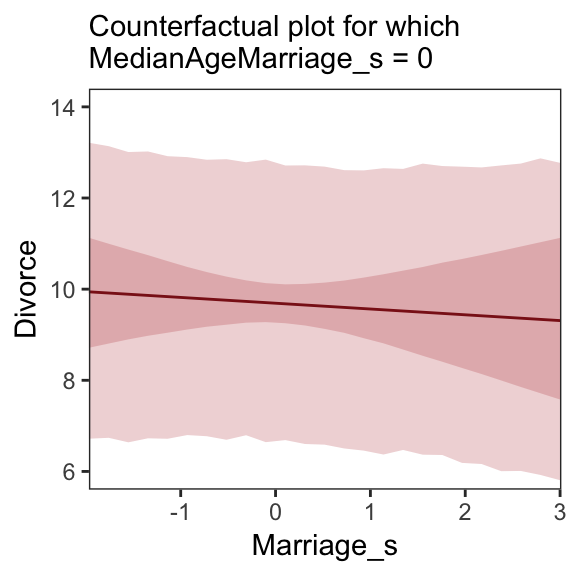
We follow the same process for Figure 5.5.b.
# new data
nd <-
tibble(MedianAgeMarriage_s = seq(from = -3, to = 3.5, length.out = 30),
Marriage_s = rep(mean(d$Marriage_s), times = 30))
# `fitted()` + `predict()`
fitted(b5.3, newdata = nd) %>%
as_tibble() %>%
rename(f_ll = Q2.5,
f_ul = Q97.5) %>%
bind_cols(
predict(b5.3, newdata = nd) %>%
as_tibble() %>%
transmute(p_ll = Q2.5,
p_ul = Q97.5)
) %>%
bind_cols(nd) %>%
# plot
ggplot(aes(x = MedianAgeMarriage_s, y = Estimate)) +
geom_ribbon(aes(ymin = p_ll, ymax = p_ul),
fill = "firebrick", alpha = 1/5) +
geom_ribbon(aes(ymin = f_ll, ymax = f_ul),
fill = "firebrick", alpha = 1/5) +
geom_line(color = "firebrick4") +
coord_cartesian(xlim = range(d$MedianAgeMarriage_s),
ylim = c(6, 14)) +
labs(subtitle = "Counterfactual plot for which\nMarriage_s = 0",
y = "Divorce") +
theme_bw() +
theme(panel.grid = element_blank()) 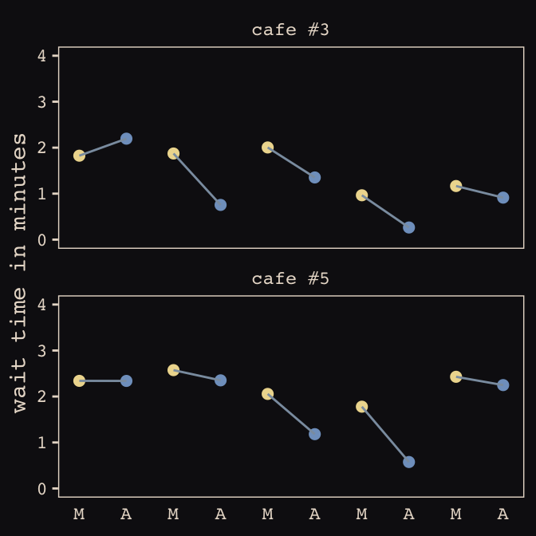
A tension with such plots, however, lies in their counterfactual nature. In the small world of the model, it is possible to change median age of marriage without also changing the marriage rate. But is this also possible in the large world of reality? Probably not…
…If our goal is to intervene in the world, there may not be any realistic way to manipulate each predictor without also manipulating the others. This is a serious obstacle to applied science, whether you are an ecologist, an economist, or an epidemiologist [or a psychologist] (p. 131)
1.1.3.3 Posterior prediction plots.
“In addition to understanding the estimates, it’s important to check the model fit against the observed data” (p. 131). For more on the topic, check out Gabry and colleagues’ Visualization in Bayesian workflow or Simpson’s related blog post Touch me, I want to feel your data.
In this version of Figure 5.6.a, the thin lines are the 95% intervals and the thicker lines are +/- the posterior \(SD\), both of which are returned when you use fitted().
fitted(b5.3) %>%
as_tibble() %>%
bind_cols(d) %>%
ggplot(aes(x = Divorce, y = Estimate)) +
geom_abline(linetype = 2, color = "grey50", size = .5) +
geom_point(size = 1.5, color = "firebrick4", alpha = 3/4) +
geom_linerange(aes(ymin = Q2.5, ymax = Q97.5),
size = 1/4, color = "firebrick4") +
geom_linerange(aes(ymin = Estimate - Est.Error,
ymax = Estimate + Est.Error),
size = 1/2, color = "firebrick4") +
# Note our use of the dot placeholder, here: https://magrittr.tidyverse.org/reference/pipe.html
geom_text(data = . %>% filter(Loc %in% c("ID", "UT")),
aes(label = Loc),
hjust = 0, nudge_x = - 0.65) +
labs(x = "Observed divorce", y = "Predicted divorce") +
theme_bw() +
theme(panel.grid = element_blank())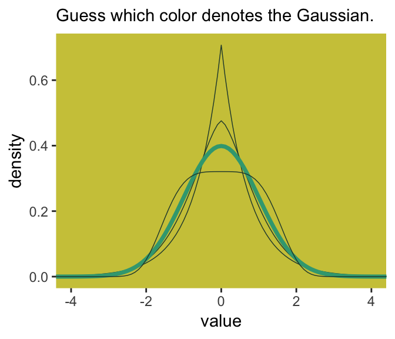
In order to make Figure 5.6.b, we need to clarify the relationships among fitted(), predict(), and residuals(). Here’s my attempt in a table.
tibble(`brms function` = c("fitted", "predict", "residual"),
mean = c("same as the data", "same as the data", "in a deviance-score metric"),
scale = c("excludes sigma", "includes sigma", "excludes sigma")) %>%
knitr::kable()| brms function | mean | scale |
|---|---|---|
| fitted | same as the data | excludes sigma |
| predict | same as the data | includes sigma |
| residual | in a deviance-score metric | excludes sigma |
This means that if we want to incorporate the prediction interval in a deviance metric, we’ll need to first use predict() and then subtract the intervals from their corresponding Divorce values in the data.
residuals(b5.3) %>%
as_tibble() %>%
rename(f_ll = Q2.5,
f_ul = Q97.5) %>%
bind_cols(
predict(b5.3) %>%
as_tibble() %>%
transmute(p_ll = Q2.5,
p_ul = Q97.5)
) %>%
bind_cols(d) %>%
# here we put our `predict()` intervals into a deviance metric
mutate(p_ll = Divorce - p_ll,
p_ul = Divorce - p_ul) %>%
# The plot
ggplot(aes(x = reorder(Loc, Estimate), y = Estimate)) +
geom_hline(yintercept = 0, size = 1/2,
color = "firebrick4", alpha = 1/10) +
geom_pointrange(aes(ymin = f_ll, ymax = f_ul),
size = 2/5, shape = 20, color = "firebrick4") +
geom_segment(aes(y = Estimate - Est.Error,
yend = Estimate + Est.Error,
x = Loc,
xend = Loc),
size = 1, color = "firebrick4") +
geom_segment(aes(y = p_ll,
yend = p_ul,
x = Loc,
xend = Loc),
size = 3, color = "firebrick4", alpha = 1/10) +
labs(x = NULL, y = NULL) +
coord_flip(ylim = c(-6, 5)) +
theme_bw() +
theme(panel.grid = element_blank(),
axis.ticks.y = element_blank(),
axis.text.y = element_text(hjust = 0))
Compared to the last couple plots, Figure 5.6.c is pretty simple.
residuals(b5.3) %>%
as_tibble() %>%
bind_cols(d) %>%
mutate(wpc = WaffleHouses / Population) %>%
ggplot(aes(x = wpc, y = Estimate)) +
geom_point(size = 1.5, color = "firebrick4", alpha = 1/2) +
stat_smooth(method = "lm", fullrange = T,
color = "firebrick4", size = 1/2,
fill = "firebrick", alpha = 1/5) +
geom_text_repel(data = . %>% filter(Loc %in% c("ME", "AR", "MS", "AL", "GA", "SC", "ID")),
aes(label = Loc),
seed = 5.6) +
scale_x_continuous(limits = c(0, 45)) +
coord_cartesian(xlim = range(0, 40)) +
labs(x = "Waffles per capita",
y = "Divorce error") +
theme_bw() +
theme(panel.grid = element_blank())
More McElreath inspiration: “No matter how many predictors you’ve already included in a regression, it’s still possible to find spurious correlations with the remaining variation” (p. 134).
1.1.3.4 Overthinking: Simulating spurious association.
N <- 100 # number of cases
set.seed(135) # setting the seed makes the results reproducible
d <-
tibble(x_real = rnorm(N), # x_real as Gaussian with mean 0 and SD 1 (i.e., the defaults)
x_spur = rnorm(N, x_real), # x_spur as Gaussian with mean = x_real
y = rnorm(N, x_real)) # y as Gaussian with mean = x_realHere are the quick pairs() plots.
pairs(d, col = "firebrick4")
brm(data = d, family = gaussian,
y ~ 1 + x_real + x_spur,
prior = c(prior(normal(0, 10), class = Intercept),
prior(normal(0, 1), class = b),
prior(uniform(0, 10), class = sigma)),
iter = 2000, warmup = 500, chains = 4, cores = 4) %>%
fixef() %>% round(digits = 2)## Estimate Est.Error Q2.5 Q97.5
## Intercept -0.05 0.09 -0.24 0.13
## x_real 1.17 0.14 0.90 1.45
## x_spur -0.05 0.09 -0.23 0.121.2 Masked relationship
Let’s load those tasty milk data.
library(rethinking)
data(milk)
d <- milkUnload rethinking and load brms.
rm(milk)
detach(package:rethinking, unload = T)
library(brms)You might inspect the data like this.
d %>%
select(kcal.per.g, mass, neocortex.perc) %>%
pairs(col = "firebrick4")
By just looking at that mess, do you think you could describe the associations of mass and neocortex.perc with the criterion, kcal.per.g? I couldn’t. It’s a good thing we have math.
McElreath has us start of with a simple univaraible milk model.
b5.5 <-
brm(data = d, family = gaussian,
kcal.per.g ~ 1 + neocortex.perc,
prior = c(prior(normal(0, 100), class = Intercept),
prior(normal(0, 1), class = b),
prior(cauchy(0, 1), class = sigma)),
iter = 2000, warmup = 500, chains = 4, cores = 4)The uniform prior was difficult on Stan. After playing around a bit, I just switched to a unit-scale half Cauchy. Similar to the rethinking example in the text, brms warned that “Rows containing NAs were excluded from the model.” This isn’t necessarily a problem; the model fit just fine. But we should be ashamed of ourselves and look eagerly forward to chapter 14 where we’ll learn how to do better.
Here’s how to explicitly drop the cases with missing values on the predictor.
dcc <-
d %>%
filter(complete.cases(.)) Let’s inspect the parameter summary.
print(b5.5, digits = 3)## Family: gaussian
## Links: mu = identity; sigma = identity
## Formula: kcal.per.g ~ 1 + neocortex.perc
## Data: d (Number of observations: 17)
## Samples: 4 chains, each with iter = 2000; warmup = 500; thin = 1;
## total post-warmup samples = 6000
##
## Population-Level Effects:
## Estimate Est.Error l-95% CI u-95% CI Eff.Sample Rhat
## Intercept 0.353 0.547 -0.723 1.485 5287 1.000
## neocortex.perc 0.004 0.008 -0.012 0.020 5304 1.000
##
## Family Specific Parameters:
## Estimate Est.Error l-95% CI u-95% CI Eff.Sample Rhat
## sigma 0.192 0.038 0.134 0.279 3721 1.001
##
## Samples were drawn using sampling(NUTS). For each parameter, Eff.Sample
## is a crude measure of effective sample size, and Rhat is the potential
## scale reduction factor on split chains (at convergence, Rhat = 1).To get the brms answer to what McElreath did with coef(), we’ll use the fixef() function.
fixef(b5.5)[2]*(76 - 55)## [1] 0.09448455Yes, indeed, “that’s less than 0.1 kilocalories” (p. 137).
Just for kicks, we’ll superimpose 50% intervals atop 95% intervals for the next few plots. Here’s Figure 5.7, top left.
nd <- tibble(neocortex.perc = 54:80)
fitted(b5.5,
newdata = nd,
probs = c(.025, .975, .25, .75)) %>%
as_tibble() %>%
bind_cols(nd) %>%
ggplot(aes(x = neocortex.perc, y = Estimate)) +
geom_ribbon(aes(ymin = Q2.5, ymax = Q97.5),
fill = "firebrick", alpha = 1/5) +
geom_ribbon(aes(ymin = Q25, ymax = Q75),
fill = "firebrick4", alpha = 1/5) +
geom_line(color = "firebrick4", size = 1/2) +
geom_point(data = dcc,
aes(x = neocortex.perc, y = kcal.per.g),
size = 2, color = "firebrick4") +
coord_cartesian(xlim = range(dcc$neocortex.perc),
ylim = range(dcc$kcal.per.g)) +
labs(y = "kcal.per.g") +
theme_bw() +
theme(panel.grid = element_blank())
Do note the probs argument in the fitted() code, above. Let’s make the log_mass variable.
dcc <-
dcc %>%
mutate(log_mass = log(mass))Now we use log_mass as the new sole predictor.
b5.6 <-
brm(data = dcc, family = gaussian,
kcal.per.g ~ 1 + log_mass,
prior = c(prior(normal(0, 100), class = Intercept),
prior(normal(0, 1), class = b),
prior(uniform(0, 1), class = sigma)),
iter = 2000, warmup = 500, chains = 4, cores = 4,
control = list(adapt_delta = 0.9))print(b5.6, digits = 3)## Family: gaussian
## Links: mu = identity; sigma = identity
## Formula: kcal.per.g ~ 1 + log_mass
## Data: dcc (Number of observations: 17)
## Samples: 4 chains, each with iter = 2000; warmup = 500; thin = 1;
## total post-warmup samples = 6000
##
## Population-Level Effects:
## Estimate Est.Error l-95% CI u-95% CI Eff.Sample Rhat
## Intercept 0.703 0.057 0.590 0.815 4479 1.000
## log_mass -0.031 0.024 -0.079 0.017 4232 1.000
##
## Family Specific Parameters:
## Estimate Est.Error l-95% CI u-95% CI Eff.Sample Rhat
## sigma 0.184 0.039 0.126 0.276 3868 1.000
##
## Samples were drawn using sampling(NUTS). For each parameter, Eff.Sample
## is a crude measure of effective sample size, and Rhat is the potential
## scale reduction factor on split chains (at convergence, Rhat = 1).Make Figure 5.7, top right.
nd <- tibble(log_mass = seq(from = -2.5, to = 5, length.out = 30))
fitted(b5.6,
newdata = nd,
probs = c(.025, .975, .25, .75)) %>%
as_tibble() %>%
bind_cols(nd) %>%
ggplot(aes(x = log_mass, y = Estimate)) +
geom_ribbon(aes(ymin = Q2.5, ymax = Q97.5),
fill = "firebrick", alpha = 1/5) +
geom_ribbon(aes(ymin = Q25, ymax = Q75),
fill = "firebrick4", alpha = 1/5) +
geom_line(color = "firebrick4", size = 1/2) +
geom_point(data = dcc,
aes(x = log_mass, y = kcal.per.g),
size = 2, color = "firebrick4") +
coord_cartesian(xlim = range(dcc$log_mass),
ylim = range(dcc$kcal.per.g)) +
labs(y = "kcal.per.g") +
theme_bw() +
theme(panel.grid = element_blank())
Finally, we’re ready to fit with both predictors included in the “joint model.” Note, the HMC chains required a longer warmup period and a higher adapt_delta setting for the model to converge properly. Life will be much better once we ditch the uniform prior for good.
b5.7 <-
brm(data = dcc, family = gaussian,
kcal.per.g ~ 1 + neocortex.perc + log_mass,
prior = c(prior(normal(0, 100), class = Intercept),
prior(normal(0, 1), class = b),
prior(uniform(0, 1), class = sigma)),
iter = 4000, warmup = 2000, chains = 4, cores = 4,
control = list(adapt_delta = 0.999))print(b5.7, digits = 3)## Family: gaussian
## Links: mu = identity; sigma = identity
## Formula: kcal.per.g ~ 1 + neocortex.perc + log_mass
## Data: dcc (Number of observations: 17)
## Samples: 4 chains, each with iter = 4000; warmup = 2000; thin = 1;
## total post-warmup samples = 8000
##
## Population-Level Effects:
## Estimate Est.Error l-95% CI u-95% CI Eff.Sample Rhat
## Intercept -1.073 0.573 -2.236 0.060 3426 1.000
## neocortex.perc 0.028 0.009 0.010 0.046 3312 1.000
## log_mass -0.096 0.027 -0.151 -0.041 3177 1.000
##
## Family Specific Parameters:
## Estimate Est.Error l-95% CI u-95% CI Eff.Sample Rhat
## sigma 0.139 0.030 0.095 0.210 3341 1.000
##
## Samples were drawn using sampling(NUTS). For each parameter, Eff.Sample
## is a crude measure of effective sample size, and Rhat is the potential
## scale reduction factor on split chains (at convergence, Rhat = 1).Make Figure 5.7, bottom left.
nd <-
tibble(neocortex.perc = 54:80 %>% as.double(),
log_mass = mean(dcc$log_mass))
b5.7 %>%
fitted(newdata = nd,
probs = c(.025, .975, .25, .75)) %>%
as_tibble() %>%
bind_cols(nd) %>%
ggplot(aes(x = neocortex.perc, y = Estimate)) +
geom_ribbon(aes(ymin = Q2.5, ymax = Q97.5),
fill = "firebrick", alpha = 1/5) +
geom_ribbon(aes(ymin = Q25, ymax = Q75),
fill = "firebrick4", alpha = 1/5) +
geom_line(color = "firebrick4", size = 1/2) +
geom_point(data = dcc, aes(x = neocortex.perc, y = kcal.per.g),
size = 2, color = "firebrick4") +
coord_cartesian(xlim = range(dcc$neocortex.perc),
ylim = range(dcc$kcal.per.g)) +
labs(y = "kcal.per.g") +
theme_bw() +
theme(panel.grid = element_blank())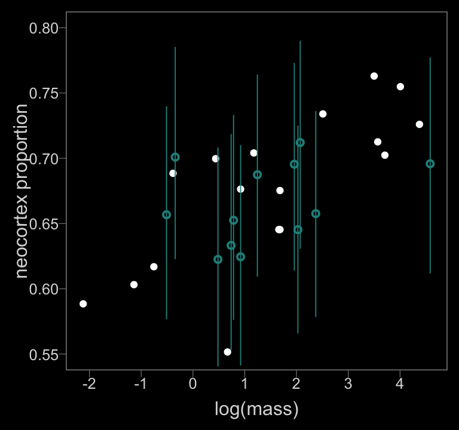
And make Figure 5.7, bottom right.
nd <-
tibble(log_mass = seq(from = -2.5, to = 5, length.out = 30),
neocortex.perc = mean(dcc$neocortex.perc))
b5.7 %>%
fitted(newdata = nd,
probs = c(.025, .975, .25, .75)) %>%
as_tibble() %>%
bind_cols(nd) %>%
ggplot(aes(x = log_mass, y = Estimate)) +
geom_ribbon(aes(ymin = Q2.5, ymax = Q97.5),
fill = "firebrick", alpha = 1/5) +
geom_ribbon(aes(ymin = Q25, ymax = Q75),
fill = "firebrick4", alpha = 1/5) +
geom_line(color = "firebrick4", size = 1/2) +
geom_point(data = dcc, aes(x = log_mass, y = kcal.per.g),
size = 2, color = "firebrick4") +
coord_cartesian(xlim = range(dcc$log_mass),
ylim = range(dcc$kcal.per.g)) +
labs(y = "kcal.per.g") +
theme_bw() +
theme(panel.grid = element_blank())
What [this regression model did was] ask if species that have high neocortex percent for their body mass have higher milk energy. Likewise, the model [asked] if species with high body mass for their neocortex percent have higher milk energy. Bigger species, like apes, have milk with less energy. But species with more neocortex tend to have richer milk. The fact that these two variables, body size and neocortex, are correlated across species makes it hard to see these relationships, unless we statistically account for both. (pp. 140–141, emphasis in the original)
1.2.0.1 Overthinking: Simulating a masking relationship.
N <- 100 # number of cases
rho <- .7 # correlation between x_pos and x_neg
set.seed(141) # setting the seed makes the results reproducible
d <-
tibble(x_pos = rnorm(N), # x_pos as a standard Gaussian
x_neg = rnorm(N, rho*x_pos, sqrt(1 - rho^2)), # x_neg correlated with x_pos
y = rnorm(N, x_pos - x_neg)) # y equally associated with x_pos and x_negHere are the quick pairs() plots.
pairs(d, col = "firebrick4")
Here we fit the models with a little help from the update() function.
b5.O.both <-
brm(data = d, family = gaussian,
y ~ 1 + x_pos + x_neg,
prior = c(prior(normal(0, 100), class = Intercept),
prior(normal(0, 1), class = b),
prior(cauchy(0, 1), class = sigma)))
b5.O.pos <-
update(b5.O.both,
formula = y ~ 1 + x_pos)
b5.O.neg <-
update(b5.O.both,
formula = y ~ 1 + x_neg)Compare the coefficients.
fixef(b5.O.pos) %>% round(digits = 2)## Estimate Est.Error Q2.5 Q97.5
## Intercept 0.01 0.13 -0.25 0.27
## x_pos 0.32 0.14 0.04 0.59fixef(b5.O.neg) %>% round(digits = 2)## Estimate Est.Error Q2.5 Q97.5
## Intercept 0.07 0.12 -0.17 0.32
## x_neg -0.51 0.14 -0.79 -0.23fixef(b5.O.both) %>% round(digits = 2)## Estimate Est.Error Q2.5 Q97.5
## Intercept 0.08 0.10 -0.13 0.28
## x_pos 1.05 0.13 0.78 1.30
## x_neg -1.18 0.14 -1.45 -0.911.3 When adding variables hurts
Multicollinearity means very strong correlation between two or more predictor variables. The consequence of it is that the posterior distribution will say that a very large range of parameter values are plausible, from tiny associations to massive ones, even if all of the variables are in reality strongly associated with the outcome variable. (pp. 141–142)
1.3.1 Multicollinear legs.
Let’s simulate some leg data.
N <- 100
set.seed(531)
d <-
tibble(height = rnorm(N, mean = 10, sd = 2),
leg_prop = runif(N, min = 0.4, max = 0.5)) %>%
mutate(leg_left = leg_prop*height + rnorm(N, mean = 0, sd = 0.02),
leg_right = leg_prop*height + rnorm(N, mean = 0, sd = 0.02))leg_left and leg_right are highly correlated.
d %>%
select(leg_left:leg_right) %>%
cor() %>%
round(digits = 4)## leg_left leg_right
## leg_left 1.0000 0.9995
## leg_right 0.9995 1.0000Have you ever seen a \(\rho = .9995\) correlation, before? Here it is in a plot.
d %>%
ggplot(aes(x = leg_left, y = leg_right)) +
geom_point(alpha = 1/2, color = "firebrick4") +
theme_bw() +
theme(panel.grid = element_blank())
Here’s our attempt to predict height with both legs.
b5.8 <-
brm(data = d, family = gaussian,
height ~ 1 + leg_left + leg_right,
prior = c(prior(normal(10, 100), class = Intercept),
prior(normal(2, 10), class = b),
prior(uniform(0, 10), class = sigma)),
iter = 2000, warmup = 500, chains = 4, cores = 4)Let’s inspect the damage.
print(b5.8)## Family: gaussian
## Links: mu = identity; sigma = identity
## Formula: height ~ 1 + leg_left + leg_right
## Data: d (Number of observations: 100)
## Samples: 4 chains, each with iter = 2000; warmup = 500; thin = 1;
## total post-warmup samples = 6000
##
## Population-Level Effects:
## Estimate Est.Error l-95% CI u-95% CI Eff.Sample Rhat
## Intercept 0.90 0.29 0.33 1.46 6000 1.00
## leg_left 0.92 2.11 -3.24 5.11 2038 1.00
## leg_right 1.09 2.11 -3.09 5.24 2038 1.00
##
## Family Specific Parameters:
## Estimate Est.Error l-95% CI u-95% CI Eff.Sample Rhat
## sigma 0.61 0.04 0.53 0.71 2924 1.00
##
## Samples were drawn using sampling(NUTS). For each parameter, Eff.Sample
## is a crude measure of effective sample size, and Rhat is the potential
## scale reduction factor on split chains (at convergence, Rhat = 1).That ‘Est.Error’ column isn’t looking too good. But it’s easy to miss that, which is why McEreath suggested “a graphical view of the [output] is more useful because it displays the posterior [estimates] and [intervals] in a way that allows us with a glance to see that something has gone wrong here” (p. 143).
Here’s our coefficient plot using brms::stanplot() with a little help from bayesplot::color_scheme_set().
color_scheme_set("red")
stanplot(b5.8,
type = "intervals",
prob = .5,
prob_outer = .95,
point_est = "median") +
labs(title = "The coefficient plot for the two-leg model",
subtitle = "Holy smokes; look at the widths of those betas!") +
theme_bw() +
theme(text = element_text(size = 14),
axis.ticks.y = element_blank(),
axis.text.y = element_text(hjust = 0))
Note. You can use the brms::stanplot() function without explicitly loading the bayesplot package. But loading bayesplot allows you to set the color scheme with color_scheme_set().
This is perhaps the simplest way to plot the bivariate posterior of our two predictor coefficients, Figure 5.8.a.
pairs(b5.8, pars = parnames(b5.8)[2:3])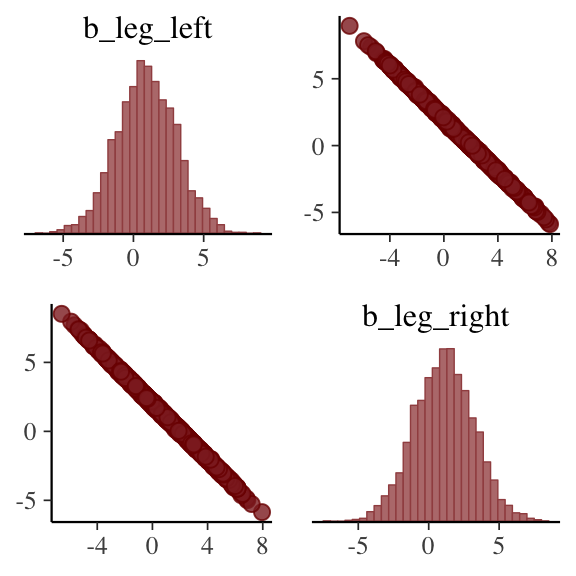
If you’d like a nicer and more focused attempt, you might have to revert to the posterior_samples() function and a little ggplot2 code.
post <- posterior_samples(b5.8)
post %>%
ggplot(aes(x = b_leg_left, y = b_leg_right)) +
geom_point(color = "firebrick", alpha = 1/10, size = 1/3) +
theme_bw() +
theme(panel.grid = element_blank())
While we’re at it, you can make a similar plot with the mcmc_scatter() function.
post %>%
mcmc_scatter(pars = c("b_leg_left", "b_leg_right"),
size = 1/3,
alpha = 1/10) +
theme_bw() +
theme(panel.grid = element_blank())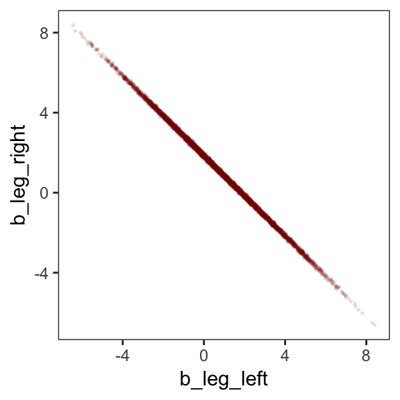
But wow, those coefficients look about as highly correlated as the predictors, just with the reversed sign.
post %>%
select(b_leg_left:b_leg_right) %>%
cor()## b_leg_left b_leg_right
## b_leg_left 1.0000000 -0.9995241
## b_leg_right -0.9995241 1.0000000On pages 143–144, McElreath clarified that “from the computer’s perspective, this likelihood is really:”
\[ \begin{eqnarray} y_i & \sim & \text{Normal}(\mu_i, \sigma) \\ \mu_i & = & \alpha + (\beta_1 + \beta_2) x_i \end{eqnarray} \]
Accordingly, here’s the posterior of the sum of the two regression coefficients, Figure 5.8.b. We’ll use tidybayes::geom_halfeyeh() to both plot the density and mark off the posterior median and percentile-based 95% probability intervals at its base.
post %>%
ggplot(aes(x = b_leg_left + b_leg_right, y = 0)) +
geom_halfeyeh(fill = "firebrick4",
point_interval = median_qi, .width = .95) +
scale_y_continuous(NULL, breaks = NULL) +
labs(title = "Sum the multicollinear coefficients",
subtitle = "Marked by the median and 95% PIs") +
theme_bw() +
theme(panel.grid = element_blank())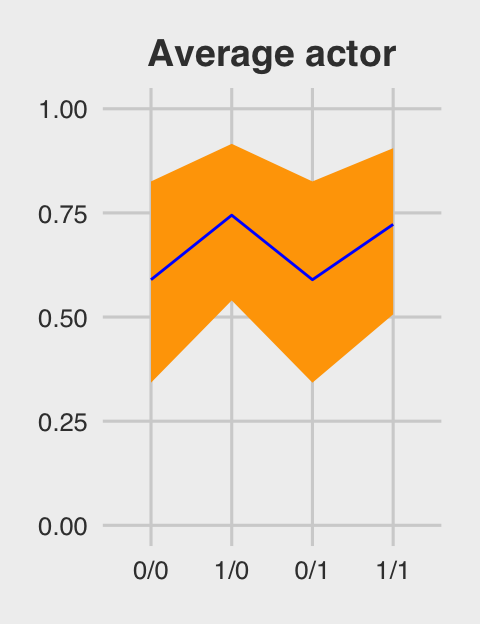
Now we fit the model after ditching one of the leg lengths.
b5.9 <-
brm(data = d, family = gaussian,
height ~ 1 + leg_left,
prior = c(prior(normal(10, 100), class = Intercept),
prior(normal(2, 10), class = b),
prior(uniform(0, 10), class = sigma)),
iter = 2000, warmup = 500, chains = 4, cores = 4)print(b5.9)## Family: gaussian
## Links: mu = identity; sigma = identity
## Formula: height ~ 1 + leg_left
## Data: d (Number of observations: 100)
## Samples: 4 chains, each with iter = 2000; warmup = 500; thin = 1;
## total post-warmup samples = 6000
##
## Population-Level Effects:
## Estimate Est.Error l-95% CI u-95% CI Eff.Sample Rhat
## Intercept 0.91 0.29 0.32 1.48 5680 1.00
## leg_left 2.00 0.07 1.87 2.14 5678 1.00
##
## Family Specific Parameters:
## Estimate Est.Error l-95% CI u-95% CI Eff.Sample Rhat
## sigma 0.61 0.04 0.53 0.70 5340 1.00
##
## Samples were drawn using sampling(NUTS). For each parameter, Eff.Sample
## is a crude measure of effective sample size, and Rhat is the potential
## scale reduction factor on split chains (at convergence, Rhat = 1).That posterior \(SD\) looks much better. Here’s the density in Figure 5.8.b.
posterior_samples(b5.9) %>%
ggplot(aes(x = b_leg_left, y = 0)) +
geom_halfeyeh(fill = "firebrick4",
point_interval = median_qi, .width = .95) +
scale_y_continuous(NULL, breaks = NULL) +
labs(title = "Just one coefficient needed",
subtitle = "Marked by the median and 95% PIs") +
theme_bw() +
theme(panel.grid = element_blank())
When two predictor variables are very strongly correlated, including both in a model may lead to confusion. The posterior distribution isn’t wrong, in such a case. It’s telling you that the question you asked cannot be answered with these data. And that’s a great thing for a model to say, that it cannot answer your question. (p. 145, emphasis in the original)
1.3.2 Multicollinear milk.
Multicollinearity arises in real data, too.
library(rethinking)
data(milk)
d <- milkUnload rethinking and load brms.
rm(milk)
detach(package:rethinking, unload = TRUE)
library(brms)We’ll follow the text and fit the two univariable models, first. Note our use of update().
# kcal.per.g regressed on perc.fat
b5.10 <-
brm(data = d, family = gaussian,
kcal.per.g ~ 1 + perc.fat,
prior = c(prior(normal(.6, 10), class = Intercept),
prior(normal(0, 1), class = b),
prior(uniform(0, 10), class = sigma)),
iter = 2000, warmup = 500, chains = 4, cores = 4)
# kcal.per.g regressed on perc.lactose
b5.11 <-
update(b5.10,
newdata = d,
formula = kcal.per.g ~ 1 + perc.lactose)posterior_summary(b5.10) %>% round(digits = 3)## Estimate Est.Error Q2.5 Q97.5
## b_Intercept 0.302 0.039 0.228 0.381
## b_perc.fat 0.010 0.001 0.008 0.012
## sigma 0.080 0.011 0.061 0.106
## lp__ 24.030 1.279 20.739 25.492posterior_summary(b5.11) %>% round(digits = 3)## Estimate Est.Error Q2.5 Q97.5
## b_Intercept 1.166 0.046 1.074 1.255
## b_perc.lactose -0.011 0.001 -0.012 -0.009
## sigma 0.067 0.010 0.051 0.090
## lp__ 28.788 1.276 25.532 30.279If you’d like to get just the 95% intervals similar to the way McElreath reported them in the prose on page 146, you might use the handy posterior_interval() function.
posterior_interval(b5.10)[2, ] %>% round(digits = 3)## 2.5% 97.5%
## 0.008 0.012posterior_interval(b5.11)[2, ] %>% round(digits = 3)## 2.5% 97.5%
## -0.012 -0.009Now “watch what happens when we place both predictor varaibles in the same regression model” (p. 146)
b5.12 <-
update(b5.11,
newdata = d,
formula = kcal.per.g ~ 1 + perc.fat + perc.lactose)posterior_summary(b5.12) %>% round(digits = 3)## Estimate Est.Error Q2.5 Q97.5
## b_Intercept 1.014 0.223 0.590 1.466
## b_perc.fat 0.002 0.003 -0.004 0.007
## b_perc.lactose -0.009 0.003 -0.014 -0.004
## sigma 0.068 0.010 0.051 0.091
## lp__ 27.662 1.494 23.898 29.547You can make custom pairs plots with GGalley, which will also compute the point estimates for the bivariate correlations. Here’s a default plot.
#install.packages("GGally", dependencies = T)
library(GGally)
ggpairs(data = d, columns = c(3:4, 6)) +
theme_bw()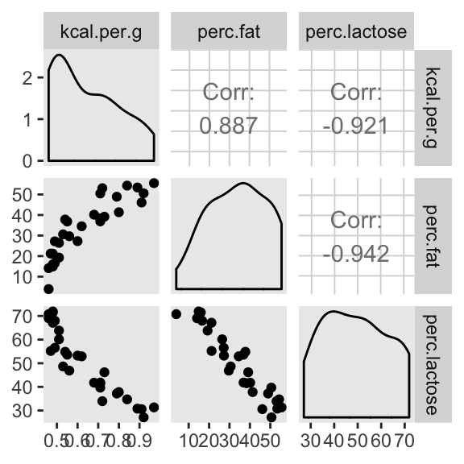
But you can customize these, too. E.g.,
my_diag <- function(data, mapping, ...){
ggplot(data = data, mapping = mapping) +
geom_density(fill = "firebrick4", size = 0)
}
my_lower <- function(data, mapping, ...){
ggplot(data = data, mapping = mapping) +
geom_smooth(method = "lm", color = "firebrick4", size = 1/3,
fill = "firebrick", alpha = 1/5) +
geom_point(color = "firebrick", alpha = .8, size = 1/4)
}
# Then plug those custom functions into `ggpairs()`
ggpairs(data = d, columns = c(3:4, 6),
diag = list(continuous = my_diag),
lower = list(continuous = my_lower)) +
theme_bw() +
theme(strip.background = element_rect(fill = "white"),
axis.text = element_blank(),
axis.ticks = element_blank(),
panel.grid = element_blank())
McElreath wrote “these two variables form essentially a single axis of variation” (p. 148). You can really see that on the lower two scatter plots. You’ll note the ggpairs() plot also showed the correlations.
1.3.2.1 Overthinking: Simulating collinearity.
First we’ll get the data and define the functions. You’ll note I’ve defined my sim_coll() a little differently from sim.coll() in the text. I’ve omitted rep.sim.coll() as an independent function altogether, but computed similar summary information with the summarise() code at the bottom of the block.
sim_coll <- function(seed, rho){
set.seed(seed)
d <-
d %>%
mutate(x = rnorm(n(),
mean = perc.fat * rho,
sd = sqrt((1 - rho^2) * var(perc.fat))))
m <- lm(kcal.per.g ~ perc.fat + x, data = d)
sqrt(diag(vcov(m)))[2] # parameter SD
}
# how many simulations per `rho`-value would you like?
n_seed <- 100
# how many `rho`-values from 0 to .99 would you like to evaluate the process over?
n_rho <- 30
d <-
tibble(seed = 1:n_seed) %>%
expand(seed, rho = seq(from = 0, to = .99, length.out = n_rho)) %>%
mutate(parameter_sd = purrr::map2(seed, rho, sim_coll)) %>%
unnest() %>%
group_by(rho) %>%
# we'll `summarise()` our output by 95% percentile-baesd intervals in addition to the mean
summarise(mean = mean(parameter_sd),
ll = quantile(parameter_sd, prob = .025),
ul = quantile(parameter_sd, prob = .975))We’ve added 95% interval bands to our version of Figure 5.10.
d %>%
ggplot(aes(x = rho, y = mean)) +
geom_line(color = "firebrick4") +
geom_ribbon(aes(ymin = ll, ymax = ul),
fill = "firebrick", alpha = 1/4) +
labs(x = expression(rho),
y = "parameter SD") +
coord_cartesian(ylim = c(0, .0072)) +
theme_bw() +
theme(panel.grid = element_blank())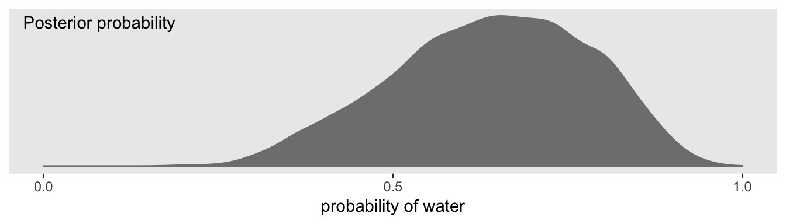
Did you notice we used the base R lm() function to fit the models? As McElreath rightly pointed out, lm() presumes flat priors. Proper Bayesian modeling could improve on that. But then we’d have to wait for a whole lot of HMC chains to run and until our personal computers or the algorithms we use to fit our Bayesian models become orders of magnitude faster, we just don’t have time for that.
1.3.3 Post-treatment bias.
It helped me understand the next example by mapping out the sequence of events McElreath described in the second paragraph:
- seed and sprout plants
- measure heights
- apply different antifungal soil treatments (i.e., the experimental manipulation)
- measure (a) the heights and (b) the presence of fungus
Based on the design, let’s simulate our data.
N <- 100
set.seed(17)
d <-
tibble(h0 = rnorm(N, mean = 10, sd = 2),
treatment = rep(0:1, each = N / 2),
fungus = rbinom(N, size = 1, prob = .5 - treatment * 0.4),
h1 = h0 + rnorm(N, mean = 5 - 3 * fungus, sd = 1))We’ll use head() to peek at the data.
d %>%
head()## # A tibble: 6 x 4
## h0 treatment fungus h1
## <dbl> <int> <int> <dbl>
## 1 7.97 0 1 12.9
## 2 9.84 0 1 11.9
## 3 9.53 0 0 15.8
## 4 8.37 0 1 11.1
## 5 11.5 0 1 13.1
## 6 9.67 0 0 15.7These data + the model were rough on Stan, at first, which spat out warnings about divergent transitions. The model ran fine after setting warmup = 1000 and adapt_delta = .99.
b5.13 <-
brm(data = d, family = gaussian,
h1 ~ 1 + h0 + treatment + fungus,
prior = c(prior(normal(0, 100), class = Intercept),
prior(normal(0, 10), class = b),
prior(uniform(0, 10), class = sigma)),
iter = 2000, warmup = 1000, chains = 4, cores = 4,
control = list(adapt_delta = 0.99))print(b5.13)## Family: gaussian
## Links: mu = identity; sigma = identity
## Formula: h1 ~ 1 + h0 + treatment + fungus
## Data: d (Number of observations: 100)
## Samples: 4 chains, each with iter = 2000; warmup = 1000; thin = 1;
## total post-warmup samples = 4000
##
## Population-Level Effects:
## Estimate Est.Error l-95% CI u-95% CI Eff.Sample Rhat
## Intercept 5.26 0.55 4.19 6.31 4000 1.00
## h0 0.96 0.05 0.86 1.06 3921 1.00
## treatment 0.21 0.23 -0.25 0.67 3558 1.00
## fungus -3.02 0.26 -3.54 -2.50 3182 1.00
##
## Family Specific Parameters:
## Estimate Est.Error l-95% CI u-95% CI Eff.Sample Rhat
## sigma 1.08 0.08 0.94 1.24 3612 1.00
##
## Samples were drawn using sampling(NUTS). For each parameter, Eff.Sample
## is a crude measure of effective sample size, and Rhat is the potential
## scale reduction factor on split chains (at convergence, Rhat = 1).Now fit the model after excluding fungus, our post-treatment variable.
b5.14 <-
update(b5.13,
formula = h1 ~ 1 + h0 + treatment)print(b5.14)## Family: gaussian
## Links: mu = identity; sigma = identity
## Formula: h1 ~ h0 + treatment
## Data: d (Number of observations: 100)
## Samples: 4 chains, each with iter = 2000; warmup = 1000; thin = 1;
## total post-warmup samples = 4000
##
## Population-Level Effects:
## Estimate Est.Error l-95% CI u-95% CI Eff.Sample Rhat
## Intercept 4.43 0.82 2.81 6.02 1928 1.00
## h0 0.90 0.08 0.75 1.06 1919 1.00
## treatment 1.26 0.32 0.60 1.86 909 1.00
##
## Family Specific Parameters:
## Estimate Est.Error l-95% CI u-95% CI Eff.Sample Rhat
## sigma 1.67 0.12 1.44 1.93 3179 1.00
##
## Samples were drawn using sampling(NUTS). For each parameter, Eff.Sample
## is a crude measure of effective sample size, and Rhat is the potential
## scale reduction factor on split chains (at convergence, Rhat = 1).“Now the impact of treatment is strong and positive, as it should be” (p. 152). In this case, there were really two outcomes. The first was the one we modeled, the height at the end of the experiment (i.e., h1). The second outcome, which was clearly related to h1, was the presence of fungus, captured by our binomial variable fungus. If you wanted to model that, you’d fit a logistic regression model, which we’ll learn about in a few chapters.
1.4 Categorical varaibles
Many readers will already know that variables like this, routinely called factors, can easily be included in linear models. But what is not widely understood is how these variables are included in a model… Knowing how the machine works removes a lot of this difficulty. (p. 153, emphasis in the original)
1.4.1 Binary categories.
Reload the Howell1 data.
library(rethinking)
data(Howell1)
d <- Howell1Unload rethinking and load brms.
rm(Howell1)
detach(package:rethinking, unload = T)
library(brms)Just in case you forgot what these data were like:
d %>%
glimpse()## Observations: 544
## Variables: 4
## $ height <dbl> 151.7650, 139.7000, 136.5250, 156.8450, 145.4150, 163.8...
## $ weight <dbl> 47.82561, 36.48581, 31.86484, 53.04191, 41.27687, 62.99...
## $ age <dbl> 63.0, 63.0, 65.0, 41.0, 51.0, 35.0, 32.0, 27.0, 19.0, 5...
## $ male <int> 1, 0, 0, 1, 0, 1, 0, 1, 0, 1, 0, 1, 0, 0, 0, 1, 1, 0, 1...Let’s fit the first height model with the male dummy.
Note. The uniform prior McElreath used in the text in conjunction with his map() function seemed to cause problems for the HMC chains, here. After experimenting with start values, increasing warmup, and increasing adapt_delta, switching out the uniform prior did the trick. Anticipating chapter 8, I recommend you use a weakly-regularizing half Cauchy for \(\sigma\).
b5.15 <-
brm(data = d, family = gaussian,
height ~ 1 + male,
prior = c(prior(normal(178, 100), class = Intercept),
prior(normal(0, 10), class = b),
prior(cauchy(0, 2), class = sigma)),
iter = 2000, warmup = 500, chains = 4, cores = 4)print(b5.15)## Family: gaussian
## Links: mu = identity; sigma = identity
## Formula: height ~ 1 + male
## Data: d (Number of observations: 544)
## Samples: 4 chains, each with iter = 2000; warmup = 500; thin = 1;
## total post-warmup samples = 6000
##
## Population-Level Effects:
## Estimate Est.Error l-95% CI u-95% CI Eff.Sample Rhat
## Intercept 134.83 1.57 131.74 137.86 6000 1.00
## male 7.28 2.30 2.92 11.71 5576 1.00
##
## Family Specific Parameters:
## Estimate Est.Error l-95% CI u-95% CI Eff.Sample Rhat
## sigma 27.37 0.84 25.79 29.09 5505 1.00
##
## Samples were drawn using sampling(NUTS). For each parameter, Eff.Sample
## is a crude measure of effective sample size, and Rhat is the potential
## scale reduction factor on split chains (at convergence, Rhat = 1).Our samples from the posterior are already in the HMC iterations. All we need to do is put them in a data frame and then put them to work.
post <- posterior_samples(b5.15)
post %>%
transmute(male_height = b_Intercept + b_male) %>%
mean_qi(.width = .89)## male_height .lower .upper .width .point .interval
## 1 142.1101 139.3874 144.8421 0.89 mean qiYou can also do this with fitted().
nd <- tibble(male = 1)
fitted(b5.15,
newdata = nd)## Estimate Est.Error Q2.5 Q97.5
## [1,] 142.1101 1.696981 138.7713 145.4467And you could even plot.
fitted(b5.15,
newdata = nd,
summary = F) %>%
as_tibble() %>%
ggplot(aes(x = V1, y = 0)) +
geom_halfeyeh(fill = "firebrick4",
point_interval = median_qi, .width = .95) +
scale_y_continuous(NULL, breaks = NULL) +
labs(subtitle = "Model-implied male heights",
x = expression(alpha + beta["male"])) +
theme_bw() +
theme(panel.grid = element_blank())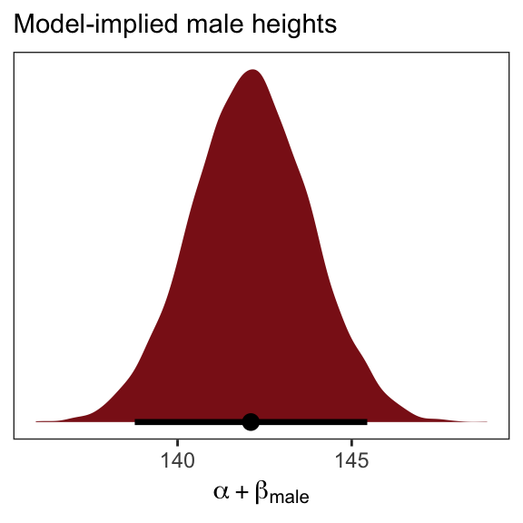
1.4.1.0.1 Overthinking: Re-parameterizing the model.
The reparameterized model follows the form
\[ \begin{eqnarray} \text{height}_i & \sim & \text{Normal}(\mu_i, \sigma) \\ \mu_i & = & \alpha_\text{female} (1 - \text{male}_i) + \alpha_\text{male} \text{male}_i \end{eqnarray} \]
So then a female dummy would satisfy the condition \(\text{female}_i = (1 - \text{male}_i)\). Let’s make that dummy.
d <-
d %>%
mutate(female = 1 - male)Everyone has their own idiosyncratic way of coding. One of my quirks is I always explicitly specify a model’s intercept following the form y ~ 1 + x, where y is the criterion, x stands for the predictors, and 1 is the intercept. You don’t have to do this, of course. You could just code y ~ x to get the same results. The brm() function assumes you want that intercept. One of the reasons I like the verbose version is it reminds me to think about the intercept and to include it in my priors. Another nice feature is that is helps me make sense of the code for this model: height ~ 0 + male + female. When we replace … ~ 1 + … with … ~ 0 + …, we tell brm() to remove the intercept. Removing the intercept allows us to include ALL levels of a given categorical variable in our model. In this case, we’ve expressed sex as two dummies, female and male. Taking out the intercept lets us put both dummies into the formula.
b5.15b <-
brm(data = d, family = gaussian,
height ~ 0 + male + female,
prior = c(prior(normal(178, 100), class = b),
prior(cauchy(0, 2), class = sigma)),
iter = 2000, warmup = 500, chains = 4, cores = 4)print(b5.15b)## Family: gaussian
## Links: mu = identity; sigma = identity
## Formula: height ~ 0 + male + female
## Data: d (Number of observations: 544)
## Samples: 4 chains, each with iter = 2000; warmup = 500; thin = 1;
## total post-warmup samples = 6000
##
## Population-Level Effects:
## Estimate Est.Error l-95% CI u-95% CI Eff.Sample Rhat
## male 142.29 1.74 138.90 145.76 6000 1.00
## female 134.67 1.63 131.49 137.88 6000 1.00
##
## Family Specific Parameters:
## Estimate Est.Error l-95% CI u-95% CI Eff.Sample Rhat
## sigma 27.37 0.83 25.83 29.07 6000 1.00
##
## Samples were drawn using sampling(NUTS). For each parameter, Eff.Sample
## is a crude measure of effective sample size, and Rhat is the potential
## scale reduction factor on split chains (at convergence, Rhat = 1).If we wanted the formal difference score from such a model, we’d subtract.
posterior_samples(b5.15b) %>%
transmute(dif = b_male - b_female) %>%
ggplot(aes(x = dif, y = 0)) +
geom_halfeyeh(fill = "firebrick4",
point_interval = median_qi, .width = .95) +
scale_y_continuous(NULL, breaks = NULL) +
labs(subtitle = "Model-implied difference score",
x = expression(alpha["male"] - alpha["female"])) +
theme_bw() +
theme(panel.grid = element_blank())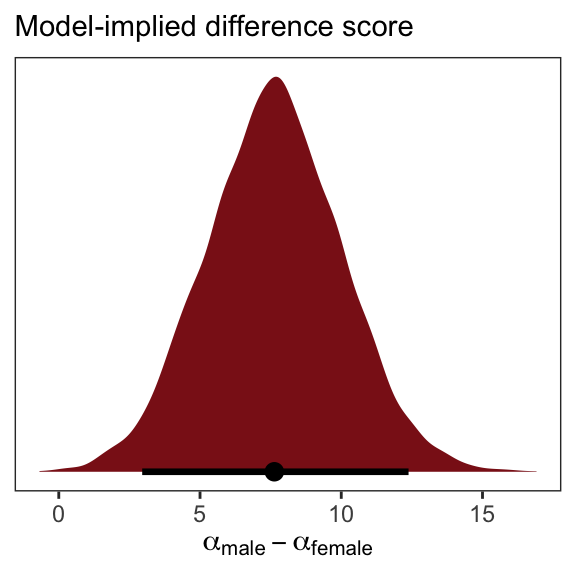
1.5 Many categories.
When there are more than two categories, you’ll need more than one dummy variable. Here’s the general rule: To include \(k\) categories in a linear model, you require \(k - 1\) dummy variables. Each dummy variable indicates, with the value 1, a unique category. The category with no dummy variable assigned to it ends up again as the “intercept” category. (p. 155)
We’ll practice with milk.
library(rethinking)
data(milk)
d <- milkUnload rethinking and load brms.
rm(milk)
detach(package:rethinking, unload = T)
library(brms)With the tidyverse, we can peek at clade with distinct() in the place of base R unique().
d %>%
distinct(clade)## clade
## 1 Strepsirrhine
## 2 New World Monkey
## 3 Old World Monkey
## 4 ApeAs clade has 4 categories, let’s convert these to 4 dummy variables.
d <-
d %>%
mutate(clade_nwm = ifelse(clade == "New World Monkey", 1, 0),
clade_owm = ifelse(clade == "Old World Monkey", 1, 0),
clade_s = ifelse(clade == "Strepsirrhine", 1, 0),
clade_ape = ifelse(clade == "Ape", 1, 0))Now we’ll fit the model with three of the four dummies. In this model, clade_ape is the reference category captured by the intercept.
b5.16 <-
brm(data = d, family = gaussian,
kcal.per.g ~ 1 + clade_nwm + clade_owm + clade_s,
prior = c(prior(normal(.6, 10), class = Intercept),
prior(normal(0, 1), class = b),
prior(uniform(0, 10), class = sigma)),
iter = 2000, warmup = 500, chains = 4, cores = 4,
control = list(adapt_delta = 0.8))print(b5.16)## Family: gaussian
## Links: mu = identity; sigma = identity
## Formula: kcal.per.g ~ 1 + clade_nwm + clade_owm + clade_s
## Data: d (Number of observations: 29)
## Samples: 4 chains, each with iter = 2000; warmup = 500; thin = 1;
## total post-warmup samples = 6000
##
## Population-Level Effects:
## Estimate Est.Error l-95% CI u-95% CI Eff.Sample Rhat
## Intercept 0.55 0.04 0.46 0.63 4505 1.00
## clade_nwm 0.17 0.06 0.04 0.29 4914 1.00
## clade_owm 0.24 0.07 0.11 0.37 4849 1.00
## clade_s -0.04 0.07 -0.19 0.10 5141 1.00
##
## Family Specific Parameters:
## Estimate Est.Error l-95% CI u-95% CI Eff.Sample Rhat
## sigma 0.13 0.02 0.10 0.17 6000 1.00
##
## Samples were drawn using sampling(NUTS). For each parameter, Eff.Sample
## is a crude measure of effective sample size, and Rhat is the potential
## scale reduction factor on split chains (at convergence, Rhat = 1).Here we grab the chains, our draws from the posterior.
post <-
b5.16 %>%
posterior_samples()
head(post)## b_Intercept b_clade_nwm b_clade_owm b_clade_s sigma lp__
## 1 0.5124694 0.1541975 0.3396514 -0.07689748 0.1167648 8.214672
## 2 0.5458684 0.1939907 0.1934893 0.01255397 0.1379074 9.643896
## 3 0.5392798 0.1551171 0.2897894 -0.08608569 0.1089561 9.850090
## 4 0.5986356 0.1108907 0.1123430 -0.06241062 0.1372436 8.833023
## 5 0.5771860 0.1645975 0.1355636 -0.05801405 0.1336761 9.335499
## 6 0.5792729 0.1313313 0.1645101 -0.05612107 0.1363703 9.980734You might compute averages for each category and summarizing the results with the transpose of base R’s apply() function, rounding to two digits of precision.
post$mu_ape <- post$b_Intercept
post$mu_nwm <- post$b_Intercept + post$b_clade_nwm
post$mu_owm <- post$b_Intercept + post$b_clade_owm
post$mu_s <- post$b_Intercept + post$b_clade_s
round(t(apply(post[ ,7:10], 2, quantile, c(.5, .025, .975))), digits = 2)## 50% 2.5% 97.5%
## mu_ape 0.55 0.46 0.63
## mu_nwm 0.71 0.63 0.80
## mu_owm 0.79 0.68 0.89
## mu_s 0.51 0.39 0.62Here’s a more tidyverse sort of way to get the same thing.
post %>%
transmute(mu_ape = b_Intercept,
mu_nwm = b_Intercept + b_clade_nwm,
mu_owm = b_Intercept + b_clade_owm,
mu_s = b_Intercept + b_clade_s) %>%
gather() %>%
group_by(key) %>%
median_qi() %>%
mutate_if(is.double, round, digits = 2)## # A tibble: 4 x 7
## key value .lower .upper .width .point .interval
## <chr> <dbl> <dbl> <dbl> <dbl> <chr> <chr>
## 1 mu_ape 0.55 0.46 0.63 0.95 median qi
## 2 mu_nwm 0.71 0.63 0.8 0.95 median qi
## 3 mu_owm 0.79 0.68 0.89 0.95 median qi
## 4 mu_s 0.51 0.39 0.62 0.95 median qiYou could also use fitted().
nd <- tibble(clade_nwm = c(1, 0, 0, 0),
clade_owm = c(0, 1, 0, 0),
clade_s = c(0, 0, 1, 0),
primate = c("New World Monkey", "Old World Monkey", "Strepsirrhine", "Ape"))
fitted(b5.16,
newdata = nd,
summary = F) %>%
as_tibble() %>%
gather() %>%
mutate(primate = rep(c("New World Monkey", "Old World Monkey", "Strepsirrhine", "Ape"), each = n() / 4)) %>%
ggplot(aes(x = value, y = reorder(primate, value))) +
geom_halfeyeh(fill = "firebrick4",
point_interval = median_qi, .width = .95) +
labs(x = "kcal.per.g",
y = NULL) +
theme_bw() +
theme(panel.grid = element_blank(),
axis.ticks.y = element_blank(),
axis.text.y = element_text(hjust = 0))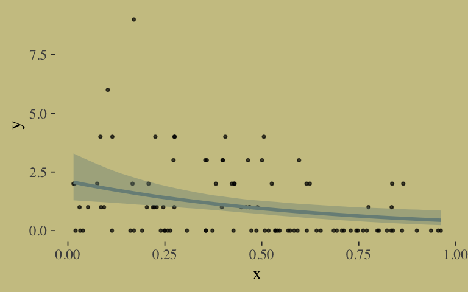
Getting summary statistics for the difference between NWM and OWM:
# base R
quantile(post$mu_nwm - post$mu_owm, probs = c(.5, .025, .975))## 50% 2.5% 97.5%
## -0.07281851 -0.20731022 0.05801646# tidyverse + tidybayes
post %>%
transmute(dif = mu_nwm - mu_owm) %>%
median_qi(dif)## dif .lower .upper .width .point .interval
## 1 -0.07281851 -0.2073102 0.05801646 0.95 median qi1.5.1 Adding regular predictor variables.
If we wanted to fit the model including perc.fat as an additional predictor,
\[\mu_i = \alpha + \beta_\text{clade_nwm} \text{clade_nwm}_i + \beta_\text{clade_owm} \text{clade_owm}_i + \beta_\text{clade_s} \text{clade_s}_i + \beta_\text{perc.fat} \text{perc.fat}_i\]
the formula code would be kcal.per.g ~ 1 + clade_nwm + clade_owm + clade_s + perc.fat.
1.5.2 Another approach: Unique intercepts.
Using the code below, there’s no need to transform d$clade into d$clade_id. The advantage of this approach is the indices in the model summary are more descriptive than a[1] through a[4].
b5.16_alt <-
brm(data = d, family = gaussian,
kcal.per.g ~ 0 + clade,
prior = c(prior(normal(.6, 10), class = b),
prior(uniform(0, 10), class = sigma)),
iter = 2000, warmup = 500, chains = 4, cores = 4)print(b5.16_alt)## Family: gaussian
## Links: mu = identity; sigma = identity
## Formula: kcal.per.g ~ 0 + clade
## Data: d (Number of observations: 29)
## Samples: 4 chains, each with iter = 2000; warmup = 500; thin = 1;
## total post-warmup samples = 6000
##
## Population-Level Effects:
## Estimate Est.Error l-95% CI u-95% CI Eff.Sample Rhat
## cladeApe 0.55 0.05 0.46 0.64 6000 1.00
## cladeNewWorldMonkey 0.71 0.04 0.63 0.80 6000 1.00
## cladeOldWorldMonkey 0.79 0.05 0.68 0.89 6000 1.00
## cladeStrepsirrhine 0.51 0.06 0.39 0.63 6000 1.00
##
## Family Specific Parameters:
## Estimate Est.Error l-95% CI u-95% CI Eff.Sample Rhat
## sigma 0.13 0.02 0.10 0.17 6000 1.00
##
## Samples were drawn using sampling(NUTS). For each parameter, Eff.Sample
## is a crude measure of effective sample size, and Rhat is the potential
## scale reduction factor on split chains (at convergence, Rhat = 1).See? This is much easier than trying to remember which one was which in an arbitrary numeric index.
1.6 Ordinary least squares and lm()
lm()Since this section centers on the frequentist lm() function, I’m going to largely ignore it. A couple things, though. You’ll note how the brms package uses the lm()-like design formula syntax. Although not as pedagogical as the more formal rethinking syntax, it has the advantage of cohering with the popular lme4 syntax for multilevel models.
Also, on page 161 McElreath clarified that one cannot use the I() syntax with his rethinking package. Not so with brms. The I() syntax works just fine with brms::brm().
Session info
sessionInfo()## R version 3.5.1 (2018-07-02)
## Platform: x86_64-apple-darwin15.6.0 (64-bit)
## Running under: macOS High Sierra 10.13.6
##
## Matrix products: default
## BLAS: /Library/Frameworks/R.framework/Versions/3.5/Resources/lib/libRblas.0.dylib
## LAPACK: /Library/Frameworks/R.framework/Versions/3.5/Resources/lib/libRlapack.dylib
##
## locale:
## [1] en_US.UTF-8/en_US.UTF-8/en_US.UTF-8/C/en_US.UTF-8/en_US.UTF-8
##
## attached base packages:
## [1] parallel stats graphics grDevices utils datasets methods
## [8] base
##
## other attached packages:
## [1] GGally_1.4.0 tidybayes_1.0.1 bayesplot_1.6.0
## [4] fiftystater_1.0.1 bindrcpp_0.2.2 ggrepel_0.8.0
## [7] forcats_0.3.0 stringr_1.3.1 dplyr_0.7.6
## [10] purrr_0.2.5 readr_1.1.1 tidyr_0.8.1
## [13] tibble_1.4.2 tidyverse_1.2.1 brms_2.4.0
## [16] Rcpp_0.12.18 rstan_2.17.3 StanHeaders_2.17.2
## [19] ggplot2_3.0.0
##
## loaded via a namespace (and not attached):
## [1] colorspace_1.3-2 ggridges_0.5.0
## [3] rsconnect_0.8.8 rprojroot_1.3-2
## [5] ggstance_0.3 markdown_0.8
## [7] base64enc_0.1-3 rstudioapi_0.7
## [9] svUnit_0.7-12 DT_0.4
## [11] mvtnorm_1.0-8 lubridate_1.7.4
## [13] xml2_1.2.0 bridgesampling_0.4-0
## [15] codetools_0.2-15 mnormt_1.5-5
## [17] knitr_1.20 shinythemes_1.1.1
## [19] jsonlite_1.5 LaplacesDemon_16.1.1
## [21] broom_0.4.5 shiny_1.1.0
## [23] mapproj_1.2.6 compiler_3.5.1
## [25] httr_1.3.1 backports_1.1.2
## [27] assertthat_0.2.0 Matrix_1.2-14
## [29] lazyeval_0.2.1 cli_1.0.0
## [31] later_0.7.3 htmltools_0.3.6
## [33] tools_3.5.1 igraph_1.2.1
## [35] coda_0.19-1 gtable_0.2.0
## [37] glue_1.2.0 reshape2_1.4.3
## [39] maps_3.3.0 cellranger_1.1.0
## [41] nlme_3.1-137 crosstalk_1.0.0
## [43] psych_1.8.4 xfun_0.3
## [45] rvest_0.3.2 mime_0.5
## [47] miniUI_0.1.1.1 gtools_3.8.1
## [49] MASS_7.3-50 zoo_1.8-2
## [51] scales_0.5.0 colourpicker_1.0
## [53] hms_0.4.2 promises_1.0.1
## [55] Brobdingnag_1.2-5 inline_0.3.15
## [57] RColorBrewer_1.1-2 shinystan_2.5.0
## [59] yaml_2.1.19 gridExtra_2.3
## [61] loo_2.0.0 reshape_0.8.7
## [63] stringi_1.2.3 highr_0.7
## [65] dygraphs_1.1.1.5 rlang_0.2.1
## [67] pkgconfig_2.0.1 matrixStats_0.54.0
## [69] HDInterval_0.2.0 evaluate_0.10.1
## [71] lattice_0.20-35 bindr_0.1.1
## [73] rstantools_1.5.0 htmlwidgets_1.2
## [75] labeling_0.3 tidyselect_0.2.4
## [77] plyr_1.8.4 magrittr_1.5
## [79] bookdown_0.7 R6_2.2.2
## [81] pillar_1.2.3 haven_1.1.2
## [83] foreign_0.8-70 withr_2.1.2
## [85] xts_0.10-2 abind_1.4-5
## [87] modelr_0.1.2 crayon_1.3.4
## [89] arrayhelpers_1.0-20160527 utf8_1.1.4
## [91] rmarkdown_1.10 grid_3.5.1
## [93] readxl_1.1.0 threejs_0.3.1
## [95] digest_0.6.15 xtable_1.8-2
## [97] httpuv_1.4.4.2 stats4_3.5.1
## [99] munsell_0.5.0 shinyjs_1.0